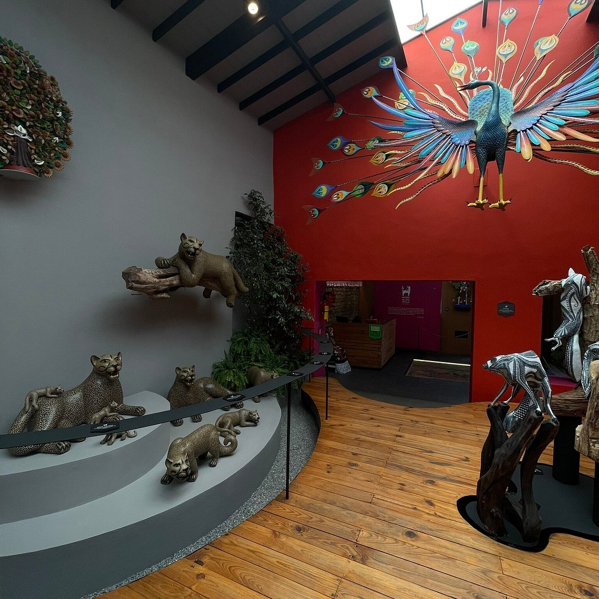
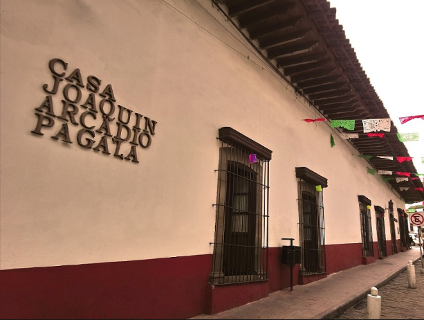

El Museo de Arte Popular de Valle de Bravo, que también muchos conocen como el Museo de Arte de Valle de Bravo, se encuentra en la calle Miguel Hidalgo número 208, en el centro de Valle de Bravo, a unas cuadras de la plaza principal y muy cerca del Mercado de Artesanías, por lo que puedes llegar caminando después de visitar el mercado

La Biblioteca Joaquín Arcadio Pagaza forma parte del Centro Cultural Joaquín Arcadio Pagaza y se encuentra en la calle Joaquín Arcadio Pagaza número 201, en el centro de Valle de Bravo, a unas dos cuadras de la plaza principal, por lo que puedes llegar caminando. Este centro está en lo que fue la casa donde vivió Joaquín Arcadio Pagaza, quien nació el 6 de enero de 1839 en Valle de Bravo y murió el 11 de septiembre de 1918 en Xalapa, Veracruz, donde se desempeñaba como obispo